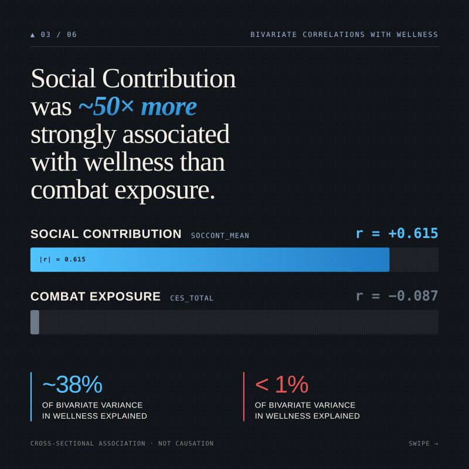

Wellness model
Five retained predictors
Moral injury, purpose, social contribution, social integration, and loneliness remained in the BIC-selected linear model.
Completed analysis
Using a 2020 survey of U.S. veterans, I examined whether post-service belonging and social meaning were more closely associated with psychological wellness than combat exposure, service era, daily stress, identity, and demographic variables.
01 / Overview
The project was motivated by Sebastian Junger’s argument in Tribe that post-service struggle may reflect the loss of cohesion, structure, and belonging associated with military life—not trauma alone.
I tested whether purpose, social contribution, social integration, loneliness, and moral injury were more informative about psychological wellness in this sample than combat exposure, service era, daily stress, military identity, and demographic variables.
02 / Visual summary

03 / Methods
I constructed a three-item loneliness mean, created service-era categories from retirement year, removed 68 cases with implausible implied retirement ages below 17, and recoded gender, branch, and marital status as categorical factors.
04 / Findings
Wellness model
Moral injury, purpose, social contribution, social integration, and loneliness remained in the BIC-selected linear model.
Model fit
The final linear model explained approximately 52% of the variance in psychological wellness in this analytic sample.
Second outcome
Moral injury, loneliness, and social contribution were the clearest predictors in the logistic model.
05 / Limitations